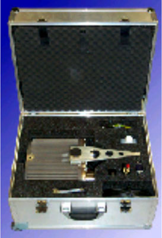
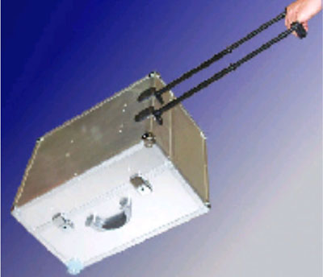

Operating Documentation
Direction 5193891-800, Rev# 5
LightSpeed 5.X Pro16 Limited Access Service Information (Adv)
Operating Documentation |
| Last Revised: | June 2003 |
| NOTE: | The bleeder described below is only used on Pro16 systems. |
For measuring the high voltage kV at the X-Ray tube a bleeder is necessary. Below is a picture of the bleeder kit developed for this system. It is smaller than in past generations. Also, when compared to past generations the aliasing problem is no longer present.
Illustration 1: High Voltage Bleeder Kit, Open

Illustration 2: High Voltage Bleeder Kit, Closed for Travel

| Always connect the bleeder to the system properly. Failure to do so can result in damage to the system. | |